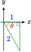
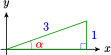
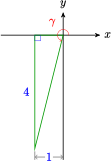

Subsection Three More Functions
The three basic trigonometric functions occur so often as the denominator of a fraction that it is convenient to give names to their reciprocals. We define three new trigonometric functions as follows.
Three More Functions
If \(\theta\) is an angle in standard position, and \(P(x,y)\) is a point on the terminal side, then we define the following functions.
\begin{equation*}
\text{The}~~ \textbf{secant}:~~~~~~ \sec \theta = \dfrac{r}{x}
\end{equation*}
\begin{equation*}
\text{The}~~ \textbf{cosecant}:~~~~ \csc \theta = \dfrac{r}{y}
\end{equation*}
\begin{equation*}
\text{The}~~ \textbf{cotangent}:~~~ \cot \theta = \dfrac{x}{y}
\end{equation*}
We can find exact values for all six trig functions at a given angle if we know the value of any one of them.
Example 8.44
If \(\sec \theta = 3\text{,}\) and \(-\dfrac{\pi}{2} \le \theta \le 0\text{,}\) find exact values for the other five trig functions.
SolutionBecause \(-\dfrac{\pi}{2} \le \theta \le 0\text{,}\) we draw a reference triangle in the fourth quadrant, as shown below.
Because \(\sec \theta = 3 = \dfrac{3}{1}\text{,}\) we label the horizontal leg with \(x=1\) and the hypotenuse with \(r=3\text{.}\) From the Pythagorean theorem, we find \(y=-\sqrt{8}=-2\sqrt{2}\text{.}\) We can now compute the values of the six trigonometric ratios. \begin{align*} \cos \theta \amp =\dfrac{x}{r}=\dfrac{1}{3} \amp \amp \sec \theta =\dfrac{r}{x}=\dfrac{3}{1}=3\\ \sin \theta \amp =\dfrac{y}{r}=\dfrac{-2\sqrt{2}}{3} \amp \amp \csc \theta =\dfrac{r}{y}=\dfrac{3}{-2\sqrt{2}}=\dfrac{-3\sqrt{2}}{4}\\ \tan \theta \amp =\dfrac{y}{x}=\dfrac{-2\sqrt{2}}{1}=-2\sqrt{2} \amp \amp \cot \theta =\dfrac{x}{y}=\dfrac{1}{-2\sqrt{2}}=\dfrac{-\sqrt{2}}{4}\\ \end{align*}
Checkpoint 8.45
If \(\csc \theta =4\text{,}\) and \(90\degree \le \theta \le 180\degree\text{,}\) find exact values for the other five trig functions.
Answer\(\cos \theta = \dfrac{-\sqrt{15}}{4},~\sin \theta = \dfrac{1}{4},~\tan \theta = \dfrac{-1}{\sqrt{15}},~\sec \theta = \dfrac{-4}{\sqrt{15}},~\cot \theta = -\sqrt{15}\)
By comparing the definitions of secant, cosecant, and cotangent to the three basic trigonometric functions, we find the following relationships.
Reciprocal Trigonometric Functions
\begin{equation*}
\text{The}~~ \textbf{secant} ~\text{function}:~~~~~~ \sec \theta = \dfrac{1}{\cos \theta}
\end{equation*}
\begin{equation*}
\text{The}~~ \textbf{cosecant}~\text{function}:~~~~ \csc \theta = \dfrac{1}{\sin \theta}
\end{equation*}
\begin{equation*}
\text{The}~~ \textbf{cotangent}~\text{function}:~~~ \cot \theta = \dfrac{1}{\tan \theta}
\end{equation*}
Calculators do not have keys for the secant, cosecant, and cotangent functions; instead, we calculate their values as reciprocals.
Example 8.46
Use a calculator to approximate \(\sec 47\degree\) to three decimal places.
Solution
With the calculator in degree mode, enter
\begin{equation*}
1~~\div ~~\text{COS}~~ 47 ~~) ~~\text{ENTER}
\end{equation*}
to obtain \(\sec 47\degree \approx 1.466\text{.}\) Or we can calculate \(\cos 47\degree\) first, and then use the reciprocal key:
\begin{equation*}
\text{COS}~~ 47~~)~~\text{ENTER}~~ x^{-1}~~\text{ENTER}
\end{equation*}
Checkpoint 8.47
Use a calculator to approximate \(\csc 132\degree\) to three decimal places.
Of course, we can also evaluate the reciprocal trig functions for angles in radians, or for real numbers. Thus for example,
\begin{equation*}
\csc 3.5 = \dfrac{1}{\sin 3.5}= -2.8508~~~~\text{and}~~~~\cot(-4) = \dfrac{1}{\tan(-4)} = -0.8637
\end{equation*}
In particular, the exact values for the reciprocal trig functions of the special angles are easily obtained.
| Exact Values for the Special Angles |
| \(\theta\) |
\(\sec \theta\) |
\(\sec \theta\) |
\(\cot \theta\) |
| \(0\) |
\(1\) |
undefined |
undefined |
| \(\dfrac{\pi}{6}\) |
\(\dfrac{2\sqrt{3}}{3}\) |
\(2\) |
\(\sqrt{3}\) |
| \(\dfrac{\pi}{4}\) |
\(\sqrt{2}\) |
\(\sqrt{2}\) |
\(1\) |
| \(\dfrac{\pi}{3}\) |
\(2\) |
\(\dfrac{2\sqrt{3}}{3}\) |
\(\dfrac{1}{\sqrt{3}}\) |
| \(\dfrac{\pi}{2}\) |
undefined |
\(1\) |
\(0\) |
Each of the reciprocal functions is undefined when its denominator is equal to zero. For example, the secant is undefined when \(\cos \theta = 0\text{,}\) or when \(\theta\) is an odd multiple of \(90\degree\text{.}\)
Example 8.49
For which angles is the cosecant undefined?
SolutionThe cosecant is undefined when its denominator, \(\sin \theta\text{,}\) equals zero, and \(\sin \theta = 0\) when \(\theta\) is a multiple of \(180\degree\text{.}\) In radians, \(\csc \theta\) is undefined if \(\theta\) is a multiple of \(\pi\text{.}\)
Checkpoint 8.50
For what angles is the cotangent undefined? Give your answers in degrees and in radians.
AnswerMultiples of \(180\degree\text{,}\) or multiples of \(\pi\text{.}\)
Subsection Application to Right Triangles
In Chapter 2 we defined three trigonometric ratios for an acute angle; namely, sine, cosine, and tangent. When we take the reciprocals of those ratios, we obtain expressions for the secant, cosecant, and cotangent.
Reciprocal Trigonometric Ratios
If \(\theta\) is one of the acute angles in a right triangle,
\begin{align*} \sec \theta \amp = \dfrac{\text{hypotenuse}}{\text{adjacent}} \\ \csc \theta \amp = \dfrac{\text{hypotenuse}}{\text{opposite}} \\ \cot \theta \amp = \dfrac{\text{adjacent}}{\text{opposite}} \\ \end{align*}
Although we can express any relationship between the sides of a right triangle using sine, cosine, and tangent, sometimes it is more convenient to use one of the reciprocal functions.
Example 8.52
The length, \(L\text{,}\) of the shadow cast by a flagpole on a sunny day depends on the height, \(h\text{,}\) of the flagpole and the angle, \(\theta\text{,}\) that the sun's rays make with ground.
- Write an expression for the length, \(L\text{,}\) of the shadow cast by a flagpole of height \(h\) when the sun makes an angle of \(\theta\) from the ground.
- Find the length (to the nearest 0.01 meter) of the shadow cast by a 3-meter flagpole when the sun makes an angle of \(20\degree\) from the ground.
Solution
- From the figure, we see that \(\dfrac{L}{h}=\cot \theta\text{,}\) or \(L=h\cot \theta\text{.}\)
- Substiting \(\alert{3}\) for \(h\) and \(\alert{20\degree}\) for \(\theta\text{,}\) we find
\begin{equation*}
L = \alert{3} \cot \alert{20\degree} = 3(2.7475)=8.24
\end{equation*}
The shadow is about 8.24 meters long.
Checkpoint 8.53
The area \(A\) of a regular polygon with \(n\) sides having perimeter \(L\) satisfies
\begin{equation*}
A = \dfrac{L^2}{4n}\cot\dfrac{\pi}{n}
\end{equation*}
Refer to the figure below showing \(n=6\) to prove this formula in the following steps.
- Find an expression for the angle \(\theta\) in terms of \(n\text{.}\)
- Find an expression for the base of the triangle shown.
- Find an expression for the height of the triangle.
- Write an expression for the area of the triangle, and then for the area of the entire polygon.
Answer
- \(\theta = \dfrac{\pi}{n}\)
- \(b = \dfrac{L}{n}\)
- \(h=\dfrac{L}{2n}\cot \dfrac{\pi}{n}\)
- \(A_T=\dfrac{L^2}{4n^2}\cot \dfrac{\pi}{n},~~A_P=\dfrac{L^2}{4n}\cot \dfrac{\pi}{n}\)
Subsection Graphs of the Reciprocal Functions
We can obtain graphs of the reciprocal trig functions by plotting points, as we did for the sine, cosine and tangent functions. However, it is more enlightening to construct these graphs as the reciprocals of the three basic functions.
Example 8.54
Use the graph of \(y=\cos x\) to construct a graph of \(f(x)=\sec x\text{.}\)
Solution
Consider the graph of \(y=\cos x\) shown at left below.
When \(x=\dfrac{-\pi}{2},~\dfrac{\pi}{2}\) and \(\dfrac{3\pi}{2},~ \cos x=0\text{,}\) so \(\sec x\) is undefined at these \(x\)-values, and we insert vertical asymptotes at those \(x\)-values to start our graph of \(y=\sec x\text{,}\) as shown at right below.
To find some points on the graph, we look at points on the graph of \(y=\cos x\text{.}\) At each \(x\)-value, the \(y\)-coordinate of the point on the graph of \(y=\sec x\) is the reciprocal of \(\cos x\text{.}\)
For example, at \(x=0\) and \(x=2\pi\text{,}\) we have \(\cos x = 1\text{,}\) so \(\sec x = \frac{1}{1} = 1\text{.}\) Thus, we plot the points \((0,1)\) and \((2\pi,1)\) on the graph of \(f(x)=\sec x\text{.}\) Similarly, at \(x=-\pi\) and \(x=\pi\text{,}\) \(\cos x = -1\text{,}\) so the value of \(\sec x\) is \(\frac{1}{-1} = -1\text{,}\) and we plot the points \((-\pi,-1)\) and \((\pi,-1)\) on the graph of \(f(x)=\sec x\text{.}\)
Finally, we notice that the values of \(\cos x\) are decreasing toward \(0\) as \(x\) increases from \(0\) to \(\dfrac{\pi}{2}\text{,}\) so the graph of \(f(x)=\sec x\) increases toward \(\infty\) on the same interval.
By similar arguments, we fill in the graph of \(f(x)=\sec x\) between each of the vertical asymptotes, to produce the graph below.
Checkpoint 8.55
Use the graph of \(y=\tan x\) to sketch a graph of \(g(x)=\cot x\text{.}\)
The graphs of the three new functions are shown below, with \(x\) in radians. Note that the secant function is undefined at odd multiples of \(\dfrac{\pi}{2}\text{,}\) the values at which \(\cos x=0\text{.}\) The cosecant is undefined where \(\sin x=0\text{,}\) namely at multiples of \(\pi\text{.}\) The cotangent is also undefined at multiples of \(\pi\text{,}\) because \(\tan x=0\) at those values.
Example 8.56
State the domain and range of the secant function.
Solution
Because the cosine is defined for all real numbers, the domain of the secant includes all real numbers except for values where the cosine is zero. These values are the odd multiples of \(\dfrac{\pi}{2}\text{,}\) that is, \(\dfrac{\pi}{2},~\dfrac{3\pi}{2},~\dfrac{5\pi}{2},~ \ldots\text{,}\) and their opposites.
Because the range of the cosine consists of all \(y\)-values with \(-1 \le y \le 1\text{,}\) the range of the secant includes the reciprocals of those values, namely \(y \ge 1\) and \(y \le -1\text{.}\)
Checkpoint 8.57
State the domain and range of the cosecant and cotangent functions.
AnswerDomain of cosecant: all real numbers except integer multiples of \(\pi\text{;}\) Range of cosecant: \((-\infty,-1] \cup [1, \infty)\text{;}\) Domain of cotangent: all real numbers except integer multiples of \(\pi\text{;}\) Range of cotangent: all real numbers
Subsection Using Identities
All six of the trigonometric ratios are related. If we know one of the ratios, we can use identities to find any of the others.
Example 8.60
If \(\sec \theta = 3\text{,}\) and \(-\dfrac{\pi}{2} \le \theta \le 0\text{,}\) find an exact value for \(\csc \theta\text{.}\)
Solution
Because \(\sec \theta = \dfrac{1}{\cos \theta}\text{,}\) we see that \(\dfrac{1}{\cos \theta}=3\text{,}\) or \(\cos \theta = \dfrac{1}{3}\text{.}\) We use the Pythagorean identity to find the sine. \begin{align*} \cos^2 \theta + \sin^2 \theta \amp = 1 \amp \amp \blert{\text{Substitute}~ \frac{1}{3} \text{for}~\cos \theta.}\\ (\dfrac{1}{3})^2 + \sin^2 \theta \amp = 1 \amp \amp \blert{\text{Subtract}~ (\frac{1}{3})^2=\frac{1}{9}~ \text{from both sides.}}\\ \sin^2 \theta \amp = 1 - \dfrac{1}{9}=\dfrac{8}{9}\\ \end{align*} Because \(\theta\) lies in the fourth quadrant, where the sine function is negative, we choose the negative square root for \(\sin \theta\text{.}\) Once we know \(\sin \theta\text{,}\) we calculate its reciprocal to find \(\csc\theta\text{.}\)
\begin{equation*}
\sin \theta = -\sqrt{\dfrac{8}{9}} = \dfrac{-2\sqrt{2}}{3},~~~\text{and}~~~\csc\theta = \dfrac{1}{\sin \theta} = \dfrac{-3}{2\sqrt{2}} = \dfrac{-3\sqrt{2}}{4}
\end{equation*}
Checkpoint 8.61
If \(\csc \theta = \dfrac{-\sqrt{13}}{3}\text{,}\) and \(\pi \le \theta \le \dfrac{3\pi}{2}\text{,}\) find an exact value for \(\sec \theta\text{.}\)
Answer\(\sec\theta = \dfrac{-\sqrt{13}}{2} \)
Identities are especially useful if the trig ratios are algebraic expressions, rather than numerical values. In the next example, we use the cotangent identity.
Cotangent Identity
\begin{equation*}
\cot \theta = \dfrac{1}{\tan \theta} = \dfrac{\cos \theta}{\sin \theta},~~~~\sin \theta \not=0
\end{equation*}
Example 8.62
If \(\csc x=w\) and \(0 \lt x \lt \dfrac{\pi}{2}\text{,}\) find an expression for \(\cot x\text{.}\)
Solution
Because the sine is the reciprocal of the cosecant, we have \(\sin x = \dfrac{1}{\csc x} = \dfrac{1}{w}\text{.}\) We substitute \(\alert{\dfrac{1}{w}}\) for \(\sin x\) in the Pythagorean identity to find
\begin{equation*}
\cos x = \pm \sqrt{1 - \sin^2 x} = \pm \sqrt{1 - (\alert{\dfrac{1}{w}})^2}
\end{equation*}
We choose the positive root because cosine is positive in the first quadrant, and simplify to get
\begin{equation*}
\cos x = \sqrt{1 - \dfrac{1}{w^2}} = \sqrt{\dfrac{w^2-1}{w^2}} = \dfrac{\sqrt{w^2 - 1}}{\abs{w}}
\end{equation*}
We can replace \(\abs{w}\) by \(w\) in this last expression because \(w \gt 0\text{.}\) (Do you see why \(w \gt 0\text{?}\)) Finally, because the cotangent is the reciprocal of the tangent, we have
\begin{equation*}
\cot x = \dfrac{\cos x}{\sin x} = \dfrac{\dfrac{w^2-1}{w}}{\dfrac{1}{w}}=\sqrt{w^2 - 1}
\end{equation*}
Checkpoint 8.63
If \(\sec t = \dfrac{2}{a}\) and \(\dfrac{3\pi}{2} \lt t \lt 2\pi\text{,}\) find expressions for \(\csc t\) and \(\cot t\text{.}\)
Answer\(\csc t = \dfrac{-2}{\sqrt{1-a^2}}\text{,}\) \(~ \cot t = \dfrac{-a}{\sqrt{1-a^2}}\)
We can often simplify trigonometric expressions by first converting all the trig ratios to sines and cosines.
Example 8.64
Simplify \(\sec \theta - \tan \theta \sin \theta\text{.}\)
SolutionWe replace \(\sec \theta\) by \(\dfrac{1}{\cos \theta}\) and \(\tan \theta\) by \(\dfrac{\sin \theta}{\cos \theta}\) to get \begin{align*} \dfrac{1}{\cos \theta} - \dfrac{\sin \theta}{\cos \theta} \cdot \sin \theta \amp = \dfrac{1}{\cos \theta} - \dfrac{\sin^2 \theta}{\cos \theta}\\ \amp = \dfrac{1 - \sin^2 \theta}{\cos \theta} = \dfrac{\cos^2 \theta}{\cos \theta} = \cos \theta\\ \end{align*}
In the previous example, you can verify that \(\sec \theta - \tan \theta \sin \theta = \cos \theta\) by graphing the functions \(Y_1=\sec \theta - \tan \theta \sin \theta\) and \(Y_2=\cos \theta\) in the ZTrig window to see that they are the same.
Checkpoint 8.65
Show that \(\sin^2 x(1+\cot^2 x) = 1\text{.}\)
Answer\(\sin^2x (1+\cot^2 x) = \sin^2 x\left(1 + \dfrac{\cos^2 x}{\sin^2 x}\right)=\sin^2 x + \cos^2 x = 1\)
There are two alternate versions of the Pythagorean identity which involve the reciprocal trig functions. These identities are useful when we know the value of \(\tan \theta\) or \(\cot \theta\) and want to find the other trig values.
Two More Pythagorean Identities
\begin{equation*}
1 + \tan^2 \theta = \sec^2\theta~~~~~~~~~~1 + \cot^2\theta = \csc^2 \theta
\end{equation*}
You should memorize these identities, but they are easy to derive from the original Pythagorean identity, \(\sin^2 \theta + \cos^2 \theta = 1\text{.}\) We will prove them in the Homework problems.
Example 8.66
If \(\tan \alpha = \dfrac{3}{5}\) and \(\alpha\) lies in the third quadrant, find exact values for \(\sec \alpha\) and \(\cos \alpha\text{.}\)
SolutionWe cannot find the sine and cosine of an angle directly from the value of the tangent; in particular, it is not true that \(\sin \alpha = 3\) and \(\cos \alpha = 5\text{!}\) (Do you see why?) Instead, we begin with the Pythagorean identity for the tangent. \begin{align*} \sec^2 \alpha \amp = 1 + \tan^2 \alpha = 1 + (\dfrac{3}{5})^2\\ \amp = \dfrac{25}{25} + \dfrac{9}{25} = \dfrac{34}{25}\\ \sec \alpha \amp = \pm \sqrt{\dfrac{34}{25}} = \dfrac{\pm \sqrt{34}}{5}\\ \end{align*} Because \(\alpha\) is in the third quadrant, both its sine and cosine are negative. Therefore the reciprocals of cosine and sine, namely secant and cosecant, must also be negative, and hence \(\sec \alpha = \dfrac{-\sqrt{34}}{5}\text{.}\) The cosine of \(\alpha\) is the reciprocal of the secant, so \(\cos \alpha = \dfrac{-5}{\sqrt{34}}\text{.}\)
Checkpoint 8.67
If \(\cot \phi = \dfrac{-3}{\sqrt{2}}\) and \(\phi\) lies in the second quadrant, find exact values for \(\csc \phi\) and \(\sin \phi\text{.}\)
Answer\(\csc \phi = \sqrt{\dfrac{11}{2}}\text{,}\) \(~ \sin \phi = \sqrt{\dfrac{2}{11}}\)
Subsection Homework 8-3
¶
For Problems 1–8, evaluate. Round answers to 3 decimal places.
1
\(\csc 27\degree\)
2
\(\sec 8\degree\)
3
\(\cot 65\degree\)
4
\(\csc 11\degree\)
5
\(\sec 1.4\)
6
\(\cot 4.3\)
7
\(\csc \dfrac{5\pi}{16}\)
8
\(\sec \dfrac{7\pi}{20}\)
For Problems 9–16, evaluate. Give exact values.
9
\(\csc 30\degree\)
10
\(\sec 0\degree\)
11
\(\cot 45\)
12
\(\csc 60\degree\)
13
\(\sec 150\degree\)
Answer\(\dfrac{-2\sqrt{3}}{3}\)
14
\(\cot 120\degree\)
15
\(\csc 135\degree\)
16
\(\sec 270\degree\)
For Problems 17–18, complete the tables with exact values.
17
| \(\theta\) |
\(0\) |
\(\dfrac{\pi}{6}\) |
\(\dfrac{\pi}{4}\) |
\(\dfrac{\pi}{3}\) |
\(\dfrac{\pi}{2}\) |
\(\dfrac{2\pi}{3}\) |
\(\dfrac{3\pi}{4}\) |
\(\dfrac{5\pi}{6}\) |
\(\pi\) |
| \(\sec \theta\) |
\(\hphantom{0000}\) |
\(\hphantom{0000}\) |
\(\hphantom{0000}\) |
\(\hphantom{0000}\) |
\(\hphantom{0000}\) |
\(\hphantom{0000}\) |
\(\hphantom{0000}\) |
\(\hphantom{0000}\) |
\(\hphantom{0000}\) |
| \(\csc \theta\) |
\(\hphantom{0000}\) |
\(\hphantom{0000}\) |
\(\hphantom{0000}\) |
\(\hphantom{0000}\) |
\(\hphantom{0000}\) |
\(\hphantom{0000}\) |
\(\hphantom{0000}\) |
\(\hphantom{0000}\) |
\(\hphantom{0000}\) |
| \(\cot \theta\) |
\(\hphantom{0000}\) |
\(\hphantom{0000}\) |
\(\hphantom{0000}\) |
\(\hphantom{0000}\) |
\(\hphantom{0000}\) |
\(\hphantom{0000}\) |
\(\hphantom{0000}\) |
\(\hphantom{0000}\) |
\(\hphantom{0000}\) |
Answer
| \(\theta\) |
\(0\) |
\(\dfrac{\pi}{6}\) |
\(\dfrac{\pi}{4}\) |
\(\dfrac{\pi}{3}\) |
\(\dfrac{\pi}{2}\) |
\(\dfrac{2\pi}{3}\) |
\(\dfrac{3\pi}{4}\) |
\(\dfrac{5\pi}{6}\) |
\(\pi\) |
| \(\sec \theta\) |
\(1\) |
\(\dfrac{2\sqrt{3}}{3}\) |
\(\sqrt{2}\) |
\(2\) |
undefined |
\(-2\) |
\(-\sqrt{2}\) |
\(-\dfrac{2\sqrt{3}}{3}\) |
\(-1\) |
| \(\csc \theta\) |
undefined |
\(2\) |
\(\sqrt{2}\) |
\(\dfrac{2\sqrt{3}}{3}\) |
\(1\) |
\(\dfrac{2\sqrt{3}}{3}\) |
\(\sqrt{2}\) |
\(2\) |
undefined |
| \(\cot \theta\) |
undefined |
\(\sqrt{3}\) |
\(1\) |
\(\dfrac{\sqrt{3}}{3}\) |
\(0\) |
\(\dfrac{-\sqrt{3}}{3}\) |
\(-1\) |
\(-\sqrt{3}\) |
undefined |
18
| \(\theta\) |
\(\pi\) |
\(\dfrac{7\pi}{6}\) |
\(\dfrac{5\pi}{4}\) |
\(\dfrac{4\pi}{3}\) |
\(\dfrac{3\pi}{2}\) |
\(\dfrac{5\pi}{3}\) |
\(\dfrac{7\pi}{4}\) |
\(\dfrac{11\pi}{6}\) |
\(2\pi\) |
| \(\sec \theta\) |
\(\hphantom{0000}\) |
\(\hphantom{0000}\) |
\(\hphantom{0000}\) |
\(\hphantom{0000}\) |
\(\hphantom{0000}\) |
\(\hphantom{0000}\) |
\(\hphantom{0000}\) |
\(\hphantom{0000}\) |
\(\hphantom{0000}\) |
| \(\csc \theta\) |
\(\hphantom{0000}\) |
\(\hphantom{0000}\) |
\(\hphantom{0000}\) |
\(\hphantom{0000}\) |
\(\hphantom{0000}\) |
\(\hphantom{0000}\) |
\(\hphantom{0000}\) |
\(\hphantom{0000}\) |
\(\hphantom{0000}\) |
| \(\cot \theta\) |
\(\hphantom{0000}\) |
\(\hphantom{0000}\) |
\(\hphantom{0000}\) |
\(\hphantom{0000}\) |
\(\hphantom{0000}\) |
\(\hphantom{0000}\) |
\(\hphantom{0000}\) |
\(\hphantom{0000}\) |
\(\hphantom{0000}\) |
19
Evaluate. Round answers to three decimal places.
- \(\cos 0.2\)
- \((\cos 0.2)^{-1}\)
- \(\cos^{-1}0.2\)
- \(\dfrac{1}{\cos 0.2}\)
- \(\cos\dfrac{1}{0.2}\)
- \(\sec 0.2\)
Answer
- \(0.980\)
- \(1.020\)
- \(1.369\)
- \(1.020\)
- \(0.284\)
- \(1.020\)
20
Evaluate. Round answers to three decimal places.
- \(\tan 3.2\)
- \(\tan^{-1} 3.2\)
- \(\cot 3.2\)
- \(\dfrac{1}{\tan 3.2}\)
- \(\tan \dfrac{1}{3.2}\)
- \((\tan 3.2)^{-1}\)
For Problems 21–28, find exact values for the six trigonometric ratios of the angle \(\theta\text{.}\)
21
Answer\(\sin \theta = \dfrac{4}{5},~\cos \theta = \dfrac{3}{5},~\tan \theta = \dfrac{4}{3},~\sec \theta = \dfrac{5}{3},~\csc \theta = \dfrac{5}{4},~\cot \theta = \dfrac{3}{4}\)
22
23
Answer\(\sin \theta = \dfrac{4}{\sqrt{41}},~\cos \theta = \dfrac{5}{\sqrt{41}},~\tan \theta = \dfrac{4}{5},~\sec \theta = \dfrac{\sqrt{41}}{5},~\csc \theta = \dfrac{\sqrt{41}}{4},\)\(\cot \theta = \dfrac{5}{4}\)
24
25
Answer\(\sin \theta = \dfrac{5}{\sqrt{74}},~\cos \theta = \dfrac{-7}{\sqrt{74}},~\tan \theta = \dfrac{-5}{7},~\sec \theta = \dfrac{-\sqrt{74}}{7},~\csc \theta = \dfrac{\sqrt{74}}{5},\)\(\cot \theta = \dfrac{-7}{5}\)
26
27
Answer\(\sin \theta = \dfrac{-5}{8},~\cos \theta = \dfrac{\sqrt{39}}{8},~\tan \theta = \dfrac{5}{\sqrt{39}},~\sec \theta = \dfrac{-8}{\sqrt{39}},~\csc \theta = \dfrac{-8}{5},\)\(\cot \theta = \dfrac{\sqrt{39}}{5}\)
28
29
The distance that sunlight must travel to pass through a layer of Earth's atmosphere depends on both the thickness of the atmosphere and the angle of the sun.
- Write an expression for the distance, \(d\text{,}\) that sunlight travels through a layer of atmosphere of thickness \(h\text{.}\)
- Find the distance (to the nearest mile) that sunlight travels through a 100-mile layer of atmosphere when the sun is \(40\degree\) above the horizon.
Answer
- \(d=h\csc \theta\)
- 155.572 miles
30
In railroad design, the degree of curvature of a section of track is the angle subtended by a chord 100 feet long.
- Use the figure to write an expression for the radius, \(r\text{,}\) of a curve whose degree of curvature is \(\theta\text{.}\) (Hint: The bisector of the angle \(\theta\) is perpendicular to the chord.)
- Find the radius of a curve whose degree of curvature is \(43\degree\text{.}\)
31
When a plane is tilted by an angle \(\theta\) from the horizontal, the time required for a ball starting from rest to roll a horizontal distance of \(l\) feet on the plane is
\begin{equation*}
t=\sqrt{\dfrac{l}{8}\csc(2\theta)}~~ \text{seconds}
\end{equation*}
- How long, to the nearest 0.01 second, will it take the ball to roll 2 feet horizontally on a plane tilted by \(12\degree\text{?}\)
- Solve the formula for \(l\) in terms of \(t\) and \(\theta\text{.}\)
Answer
- 0.78 sec
- \(l=8t^2\sin 2\theta\)
32
After a heavy rainfall, the depth, \(D\text{,}\) of the runoff flow at a distance \(x\) feet from the watershed down a slope at angle \(\alpha\) is given by
\begin{equation*}
D=(kx)^{0.6}(\cot \alpha)^{0.3}~~\text{inches}
\end{equation*}
where \(k\) is a constant determined by the surface roughness and the intensity of the runoff.
- How deep, to the nearest 0.01 inch, is the runoff 100 feet down a slope of \(10\degree\) if \(k=0.0006\text{?}\)
- Solve the formula for \(x\) in terms of \(D\) and \(\alpha\text{.}\)
For Problems 33–38, write algebraic expressions for the six trigonometric ratios of the angle \(\theta\text{.}\)
33
Answer\(\sin \theta = \dfrac{7}{\sqrt{x^2+49}},~\cos \theta = \dfrac{x}{\sqrt{x^2+49}},~\tan \theta = \dfrac{7}{x},~\sec \theta = \dfrac{\sqrt{x^2+49}}{x},\)\(\csc \theta = \dfrac{\sqrt{x^2+49}}{7},~\cot \theta = \dfrac{x}{7}\)
34
35
Answer\(\sin \theta = S,~\cos \theta = \sqrt{1-S^2},~\tan \theta = \dfrac{S}{\sqrt{1-S^2}},~\sec \theta = \dfrac{1}{\sqrt{1-S^2}},\)\(\csc \theta = \dfrac{1}{S},~\cot \theta = \dfrac{\sqrt{1-S^2}}{S}\)
36
37
Answer\(\sin \theta = \dfrac{-\sqrt{9-a^2}}{3},~\cos \theta = \dfrac{a}{3},~\tan \theta = \dfrac{-\sqrt{9-a^2}}{a},~\sec \theta = \dfrac{3}{a},\)\(\csc \theta = \dfrac{-3}{\sqrt{9-a^2}},~\cot \theta = \dfrac{-a}{\sqrt{9-a^2}}\)
38
39
The diagram shows a unit circle. Find six line segments whose lengths are, repsectively, \(\sin t,~ \cos t,~ \tan t,~ \sec t,~ \csc t,\) and \(\cot t\text{.}\)
Answer\(AC,~OA,~BD,~OD,~OE,~EF\)
40
Use the figure in Problem 39 to find each area in terms of the angle \(t\text{.}\)
- \(\triangle OAC\)
- \(\triangle OBD\)
- sector \(OAC\)
- \(\triangle OFE\)
For Problems 41–46, sketch the reference angle, and find exact values for all six trigonometric functions of the angle.
41
\(\sec \theta = 2,~~\theta\) in Quadrant IV
Answer

\(~\sin \theta = \dfrac{\sqrt{3}}{2}\text{,}\) \(~\cos \theta = \dfrac{1}{2}\text{,}\) \(~\tan \theta = -\sqrt{3}\text{,}\) \(~\sec \theta = 2\text{,}\) \(~\csc \theta = \dfrac{-2\sqrt{3}}{3}\text{,}\) \(~\cot \theta = \dfrac{-\sqrt{3}}{3}\)
42
\(\csc \phi = 4,~~\phi\) in Quadrant II
43
\(\csc \alpha = 3,~~\alpha\) in Quadrant I
Answer

\(\sin \alpha = \dfrac{1}{3}\text{,}\) \(~\cos \alpha = \dfrac{2\sqrt{2}}{3}\text{,}\) \(~\tan \alpha = \dfrac{\sqrt{2}}{4}\text{,}\) \(~\sec \alpha = \dfrac{3\sqrt{2}}{4}\text{,}\) \(~\csc \alpha = 3\text{,}\) \(~\cot \alpha = 2\sqrt{2}\)
44
\(\sec \beta = 4,~~\beta\) in Quadrant IV
45
\(\cot \gamma = \dfrac{1}{4},~~\gamma\) in Quadrant III
Answer

\(\sin \gamma = \dfrac{-4}{\sqrt{17}}\text{,}\) \(~\cos \gamma = \dfrac{-1}{\sqrt{17}}\text{,}\) \(~\tan \gamma = 4,~\sec \gamma = \-\sqrt{17}\text{,}\) \(~\csc \gamma = \dfrac{-\sqrt{17}}{4}\text{,}\) \(\cot \gamma = \dfrac{1}{4}\)
46
\(\tan \theta = 6,~~\theta\) in Quadrant I
For Problems 47–52, evaluate.
47
\(4 \cot \dfrac{\pi}{3} + 2\sec \dfrac{\pi}{4}\)
Answer\(\dfrac{4\sqrt{3}}{3}+2\sqrt{2}\)
48
\(\dfrac{1}{2} \csc \dfrac{\pi}{6} - \dfrac{1}{4}\cot \dfrac{\pi}{6}\)
49
\(\dfrac{1}{2} \csc \dfrac{5\pi}{3}\cot \dfrac{3\pi}{4}\)
50
\(6 \cot \dfrac{7\pi}{6} \sec \dfrac{5\pi}{4}\)
51
\((\csc \dfrac{2\pi}{3} - \sec \dfrac{3\pi}{4})^2\)
Answer\(\dfrac{4\sqrt{6}}{3}+\dfrac{10}{3}\)
52
\(\sec^2 \dfrac{5\pi}{6} \csc^2 \dfrac{4\pi}{3}\)
53
Complete the table and sketch a graph of \(y=\sec x\text{.}\)
| \(x\) |
\(0\) |
\(\dfrac{\pi}{4}\) |
\(\dfrac{\pi}{2}\) |
\(\dfrac{3\pi}{4}\) |
\(\pi\) |
\(\dfrac{5\pi}{4}\) |
\(\dfrac{3\pi}{2}\) |
\(\dfrac{7\pi}{4}\) |
\(2\pi\) |
| \(\sec x\) |
\(\hphantom{0000}\) |
\(\hphantom{0000}\) |
\(\hphantom{0000}\) |
\(\hphantom{0000}\) |
\(\hphantom{0000}\) |
\(\hphantom{0000}\) |
\(\hphantom{0000}\) |
\(\hphantom{0000}\) |
\(\hphantom{0000}\) |
Answer
| \(x\) |
\(0\) |
\(\dfrac{\pi}{4}\) |
\(\dfrac{\pi}{2}\) |
\(\dfrac{3\pi}{4}\) |
\(\pi\) |
\(\dfrac{5\pi}{4}\) |
\(\dfrac{3\pi}{2}\) |
\(\dfrac{7\pi}{4}\) |
\(2\pi\) |
| \(\sec x\) |
\(1\) |
\(\sqrt{2}\) |
undefined |
\(-\sqrt{2}\) |
\(-1\) |
\(-\sqrt{2}\) |
undefined |
\(\sqrt{2}\) |
\(1\) |
54
Complete the table and sketch a graph of \(y=\csc x\text{.}\)
| \(x\) |
\(0\) |
\(\dfrac{\pi}{4}\) |
\(\dfrac{\pi}{2}\) |
\(\dfrac{3\pi}{4}\) |
\(\pi\) |
\(\dfrac{5\pi}{4}\) |
\(\dfrac{3\pi}{2}\) |
\(\dfrac{7\pi}{4}\) |
\(2\pi\) |
| \(\csc x\) |
\(\hphantom{0000}\) |
\(\hphantom{0000}\) |
\(\hphantom{0000}\) |
\(\hphantom{0000}\) |
\(\hphantom{0000}\) |
\(\hphantom{0000}\) |
\(\hphantom{0000}\) |
\(\hphantom{0000}\) |
\(\hphantom{0000}\) |
55
Use the graph of \(y=\sin x\) to sketch a graph of its reciprocal, \(y=\csc x\text{.}\)
56
Use the graph of \(y=\cos x\) to sketch a graph of its reciprocal, \(y=\sec x\text{.}\)
57
Complete the table and sketch a graph of \(y=\cot x\text{.}\)
| \(x\) |
\(0\) |
\(\dfrac{\pi}{4}\) |
\(\dfrac{\pi}{2}\) |
\(\dfrac{3\pi}{4}\) |
\(\pi\) |
\(\dfrac{5\pi}{4}\) |
\(\dfrac{3\pi}{2}\) |
\(\dfrac{7\pi}{4}\) |
\(2\pi\) |
| \(\cot x\) |
\(\hphantom{0000}\) |
\(\hphantom{0000}\) |
\(\hphantom{0000}\) |
\(\hphantom{0000}\) |
\(\hphantom{0000}\) |
\(\hphantom{0000}\) |
\(\hphantom{0000}\) |
\(\hphantom{0000}\) |
\(\hphantom{0000}\) |
Answer
| \(x\) |
\(0\) |
\(\dfrac{\pi}{4}\) |
\(\dfrac{\pi}{2}\) |
\(\dfrac{3\pi}{4}\) |
\(\pi\) |
\(\dfrac{5\pi}{4}\) |
\(\dfrac{3\pi}{2}\) |
\(\dfrac{7\pi}{4}\) |
\(2\pi\) |
| \(\cot x\) |
undefined |
\(1\) |
\(0\) |
\(-1\) |
undefined |
\(1\) |
\(0\) |
\(-1\) |
undefined |
58
Use the graphs of \(y=\cos x\) and \(y=\sin x\) to sketch a graph of \(y=\cot x = \dfrac{\cos x}{\sin x}\text{.}\)
For Problems 59-64,
- Graph each function in the ZTrig window, and write a simpler expression for the function.
- Show algebraically that your new expression is equivalent to the original one.
59
\(y=\dfrac{\csc x}{\cot x}\)
Answer\(\dfrac{\csc x}{\cot x}=\dfrac{\dfrac{1}{\sin x}}{\dfrac{\cos x}{\sin x}} = \dfrac{1}{\sin x}\div \dfrac{\cos x}{\sin x}=\dfrac{1}{\sin x}\cdot \dfrac{\sin x}{\cos x} = \dfrac{1}{\cos x} = \sec x\)
60
\(y=\dfrac{\sec x}{\tan x}\)
61
\(y=\dfrac{\sec x \cot x}{\csc x}\)
Answer\(\dfrac{\sec x \cot x}{\csc x}=\dfrac{\dfrac{1}{\cos x} \cdot \dfrac{\cos x}{\sin x}}{\dfrac{1}{\sin x}} = \dfrac{\dfrac{1}{\sin x}}{\dfrac{1}{\sin x}} = 1\)
62
\(y=\dfrac{\csc x \tan x}{\sec x}\)
63
\(y=\tan x \csc x\)
Answer\(\tan x \csc x = \dfrac{\sin x}{\cos x} \cdot \dfrac{1}{\sin x} = \dfrac{1}{\cos x} = \sec x\)
64
\(y=\sin x \sec x\)
For Problems 65–70, find all solutions between \(0\) and \(2\pi\text{.}\)
65
\(3\csc \theta + 2=8\)
Answer\(\dfrac{\pi}{6},~ \dfrac{5\pi}{6}\)
66
\(-2\sec \theta + 8=3\)
67
\(\sqrt{2}\sec \theta =-2\)
Answer\(\dfrac{3\pi}{4},~ \dfrac{5\pi}{4}\)
68
\(8+\csc \theta =6\)
69
\(2\cot \theta = -\sqrt{12}\)
Answer\(\dfrac{5\pi}{6},~ \dfrac{11\pi}{6}\)
70
\(\sqrt{3}\cot \theta =1\)
For Problems 71–76, use identities to find exact values or to write algebraic expressions.
71
If \(\tan \alpha = -2\) and \(\dfrac{\pi}{2} \lt \alpha \lt \pi\text{,}\) find \(\cos \alpha\text{.}\)
72
If \(\cot \beta = \dfrac{5}{4}\) and \(\pi \lt \beta \lt \dfrac{3\pi}{2}\text{,}\) find \(\sin \beta\text{.}\)
73
If \(\sec x = \dfrac{a}{2}\) and \(0 \lt \alpha \lt \dfrac{\pi}{2}\text{,}\) find \(\tan x\text{.}\)
Answer\(\dfrac{\sqrt{a^2-4}}{2}\)
74
If \(\csc y = \dfrac{1}{b}\) and \(\dfrac{\pi}{2} \lt y \lt \pi\text{,}\) find \(\cot y\text{.}\)
75
If \(\csc \phi = w\) and \(\dfrac{3\pi}{2} \lt \alpha \lt 2\pi\text{,}\) find \(\cos \phi\text{.}\)
Answer\(\dfrac{\sqrt{w^2-1}}{-w}\)
76
If \(\sec \theta = \dfrac{3}{z}\) and \(\pi \lt \alpha \lt \dfrac{\pi}{2}\text{,}\) find \(\sin \theta\text{.}\)
For Problems 77–80, find exact values for \(\sec s,~ \csc s,\) and \(\cot s\text{.}\)
77
Answer\(\sec s = \dfrac{-5}{4},~\csc s = \dfrac{5}{3},~\cot s = \dfrac{-4}{3}\)
78
79
Answer\(\sec s = \dfrac{1}{\sqrt{1-w^2}},~\csc s = \dfrac{1}{w},~\cot s = \dfrac{\sqrt{1-w^2}}{w}\)
80
For Problems 81–88, write the expression in terms of sine and cosine, and simplify.
81
\(\sec \theta \tan \theta\)
Answer\(\dfrac{\sin \theta}{\cos^2\theta}\)
82
\(\csc \phi \cot \phi\)
83
\(\dfrac{\csc t}{cot t}\)
84
\(\dfrac{\tan v}{\sec v}\)
85
\(\sec \beta - \tan \beta\)
Answer\(\dfrac{1-\sin \beta}{\cos \beta}\)
86
\(\cot \alpha + \csc \alpha\)
87
\(\sin x \tan x - \sec x\)
88
\(\csc y - \cos y \cot y\)
89
Prove the Pythagorean identity \(1 + \tan^2 \theta = \sec^2 \theta\text{.}\) (Hint: Start with the identity \(\cos^2 \theta + \sin^2 \theta = 1\) and divide both sides of the equation by \(\cos^2 \theta\text{.}\))
Answer\begin{align*} \cos^2 \theta + \sin^2 \theta \amp = 1\\ \dfrac{\cos^2 \theta}{\cos^2 \theta}+\dfrac{\sin^2 \theta}{\cos^2 \theta}\amp = \dfrac{1}{\cos^2 \theta}\\ 1 + \tan^2 \theta \amp = \sec^2 \theta\\ \end{align*}
90
Prove the Pythagorean identity \(1 + \cot^2 \theta = \csc^2 \theta\text{.}\) (Hint: Start with the identity \(\cos^2 \theta + \sin^2 \theta = 1\) and divide both sides of the equation by \(\sin^2 \theta\text{.}\))
91
Suppose that \(\cot \theta = 5\) and \(\theta\) lies in the third quadrant.
- Use the Pythagorean identity to find the value of \(\csc \theta\text{.}\)
- Use identities to find the values of the other four trig functions of \(\theta\text{.}\)
Answer
- \(\csc \theta = -\sqrt{26}\)
- \(\sin \theta = \dfrac{-\sqrt{26}}{26},~\cos \theta = \dfrac{-5\sqrt{26}}{26},~\tan \theta = \dfrac{1}{5},~\sec \theta = \dfrac{-\sqrt{26}}{5}\)
92
Suppose that \(\tan \theta = -2\) and \(\theta\) lies in the second quadrant.
- Use the Pythagorean identity to find the value of \(\sec \theta\text{.}\)
- Use identities to find the values of the other four trig functions of \(\theta\text{.}\)
93
Write each of the other five trig functions in terms of \(\sin t\) only.
Answer\(\cos t = \pm \sqrt{1-\sin^2 t},~\tan t = \dfrac{\pm \sin t}{\sqrt{1-\sin^2 t}},~\sec t = \dfrac{\pm 1}{\sqrt{1-\sin^2 t}},\)\(\csc t = \dfrac{1}{\sin t},~ \cot t = \dfrac{\pm \sqrt{1-\sin^2 t}}{\sin t}\)
94
Write each of the other five trig functions in terms of \(\cos t\) only.
95
Show that if the angles of a triangle are \(A,~B,\) and \(C\) and the opposite sides are respectively \(a,~b,\) and \(c,\) then
\begin{equation*}
a \csc A = b \csc B = c \csc C
\end{equation*}
Answer\begin{align*} \dfrac{a}{\sin A} \amp = \dfrac{b}{\sin B} = \dfrac{c}{\sin C}\\ a \cdot\dfrac{1}{\sin A} \amp = b \cdot \dfrac{1}{\sin B} = c \cdot \dfrac{1}{\sin C}\\ a \csc A \amp = b \csc B = c \csc C\\ \end{align*}
96
The figure shows a unit circle and an angle \(\theta\) in standard position. Each of the six trigonometric ratios for \(\theta\) is represented by the length of a line segment in the figure. Find the line segment for each ratio, and explain your choice.